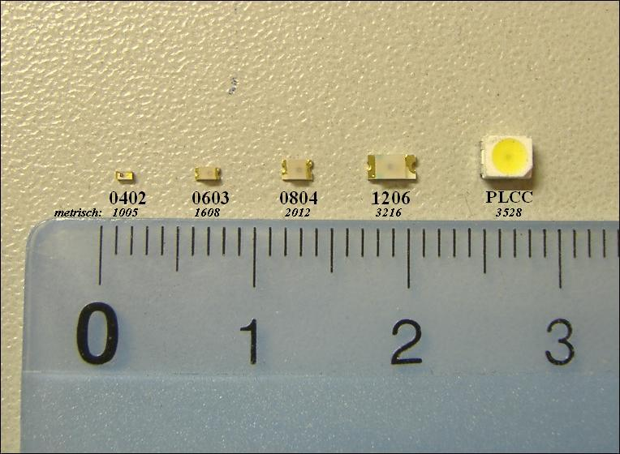
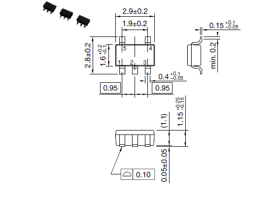
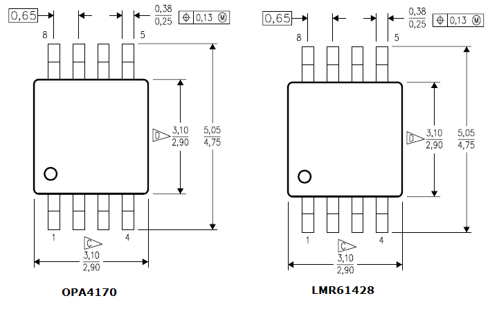
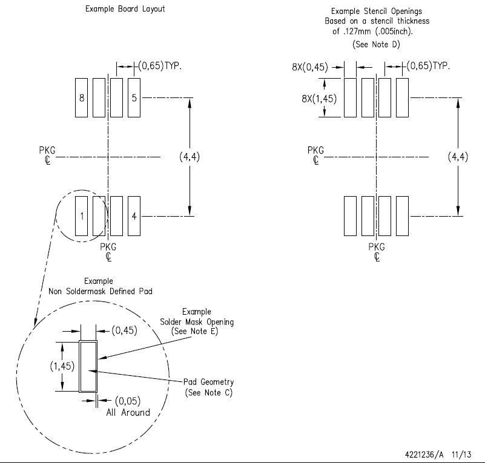
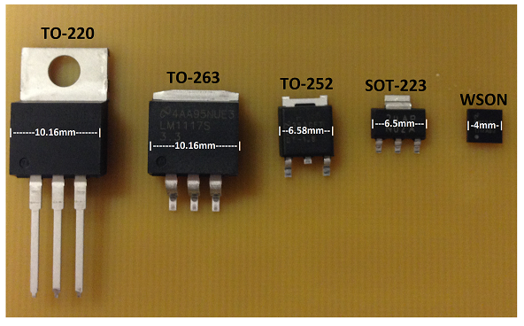

Surface Mount Devices (SMD)
5 Jul 2017
Resistors and Diodes
The numbers represent their physical sizes in inches, for example, a 1206 is 0.125 x 0.060 inch.
| Num | Size (mm) | Difficulty |
|---|---|---|
| 1206 | 3.20 x 1.60 | easy |
| 0805 | 2.00 x 1.25 | moderate |
| 0603 | 1.60 x 0.80 | harder, but doable (need good lighting, tweezers, and magnification) |
| 0402 | 1.00 x 0.50 | never tried, don’t have any, I can barely see a 0603 😄) |

Packages
The smallest I can do is a SOT-25 or SOT-23 (SOT-223 is x4 larger). The VSSOP-8 shown below is smaller with the pin spacing ~1/2 the distance appart … too small for me.
SOT-25

VSSOP-8


Other
